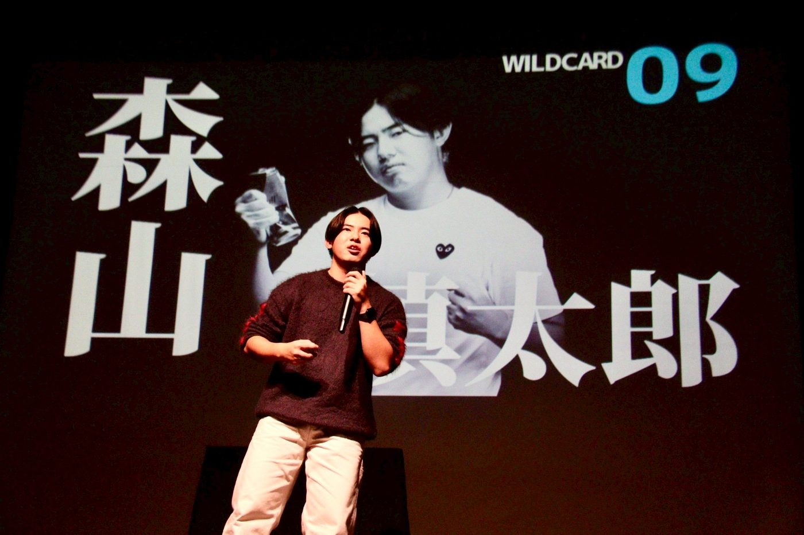
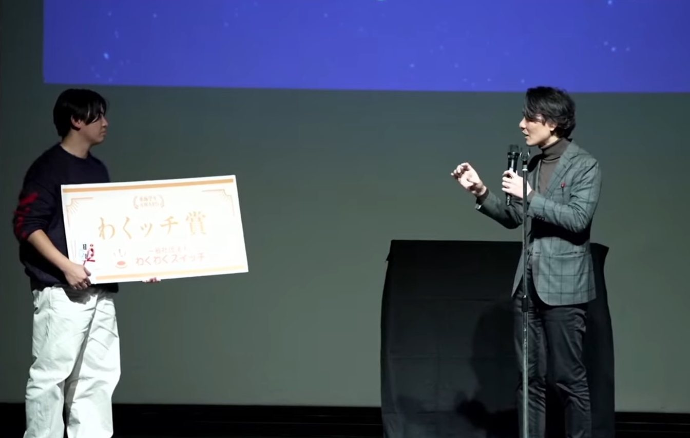

プレゼン指導
「何を話すか」の前に「なぜ自分がやるのか」を一緒に掘り起こし、伝わる構成と話し方に仕上げます。
- 探究学習の発表
- コンテスト・ピッチ
- 入試・面接の自己表現

About
兵庫県出身、立命館アジア太平洋大学（APU）国際経営学部の1回生。中高生・大学生のプレゼン指導と、学生が自分の挑戦を語るイベント「NEXT SPARK JAPAN」の主催をしています。
原点は、3つの舞台にあります。
仲間と挑んだ探究学習の全国大会「クエストカップ」で、グランプリと参加者投票のWow賞をW受賞。
東海学生AWARDで一度は敗退。それでも観客投票のワイルドカードで、決勝の舞台に立ちました。
学生が自分の挑戦を語れる場として、プレゼンイベント「NEXT SPARK JAPAN」を主催。
伝え方ひとつで、人の心も結果も動く。それを身をもって知りました。

AIで、60〜70点のアイデアは誰でも出せる時代。だからこそ差がつくのは、「なぜ自分がやるのか」を自分の言葉で伝える力だと考えています。
だから僕は、自分が課題を解くことよりも、課題に挑む人の背中を押すことを選びました。想いはあるのに言葉にできない人が、堂々と一歩を踏み出せるように。プレゼンを研究し、伝え、場をつくっています。
Vision
誰かの挑戦が、隣の誰かの「やってみよう」に火をつける。その最初の火花は、いつも「人に話すこと」から生まれると思っています。
Track Record
5月の第1回に続く、APU生が自分の挑戦を語るプレゼンイベントを企画中。登壇者の募集からPR動画の制作まで手がけています。
REALVALUEの学生コミュニティ「RVSS」に参加し、学生側の運営を担当しています。
APUで挑戦する学生たちのプレゼンイベントを初開催。登壇者のプレゼンと交流会を通して、参加者が「次の一歩」を見つける場をつくりました。

予選で一度は敗れるも、観客投票による敗者復活（ワイルドカード）で決勝へ。決勝の舞台では「わくッチ賞」を受賞しました。


チーム「布団が吹っ飛んだ!!」として、インターネットの世界に「触れる」触覚スーツ「ToucH」を提案。コーポレートアクセス部門で「Qグループグランプリ＆LINEヤフー企業賞」を受賞し、さらに参加者投票による「Wow賞」とのW受賞を果たしました。聖心学園中等教育学校として3度目のグランプリです。
Wow賞とは全国大会の参加者全員による投票で、最も優れたチームに贈られる賞。審査員だけでなく、会場にいた同世代の仲間からも一番の支持を集めた証です。

Media
2024.03.29｜グランプリを受賞したチーム「布団が吹っ飛んだ!!」へのインタビューが掲載されています。
記事を読む →2024.05.08｜LINEヤフー企業賞を受賞したチームとして本社に招かれ、執行役員の方々と対談しました。
記事を読む →全国から6,099チームがエントリーした大会の、グランプリ受賞チームとして紹介されています。
記事を読む →What I Do
「何を話すか」の前に「なぜ自分がやるのか」を一緒に掘り起こし、伝わる構成と話し方に仕上げます。
学生が自分の挑戦を語れる舞台を、企画・集客・当日運営まで一貫してつくります。
単発の講座で終わらせず、テーマ決めから発表本番まで、生徒と同じ目線で走ります。
「誰に、何を伝えたいか」から一緒に整理して、想いが伝わるWebサイトをつくります。